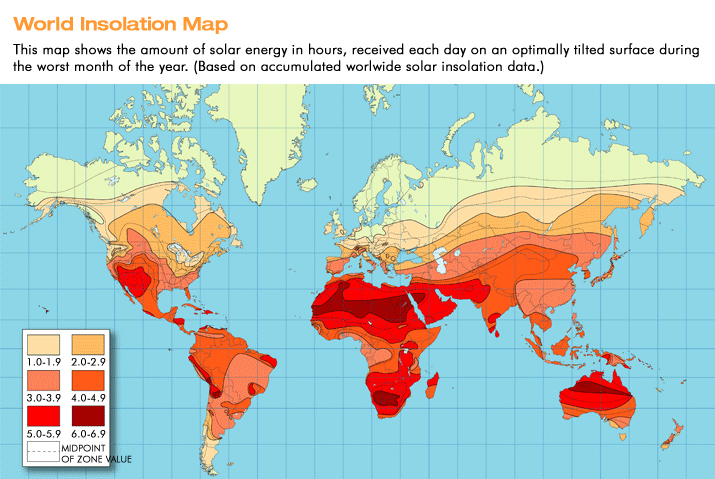

NOTE: ALL INPUT FIELDS MUST BE FILLED
The application will estimate the sizing of a specific PV and Batteries
and the minimum specifications for inverter and charge controller
necessary to satisfy the load demand given the solar irradiation
and days of autonomy of the system
The user may directly input the total load parameters
or may input the appliances one by one, to do the latter
press Add Appliances and Ratings.
The user must input operating voltage of the PV system, this is
usually 12 V or 24 V. For Efficiency, it accounts the losses on
the battery, cables and the charge controller itself. Its value
ranges from 70% to 90%, but typically 85% (0.85)
The sun-hours can be determined with an insolation map.

The inverter specifications assumes to be compliant
with the operating voltage. For efficiency, it can be
set to 0.9.
Please refer to the datasheet.
Once the parameters are set, press Initialize to calculate
the PV system sizing parameters and specifications that will be shown below.